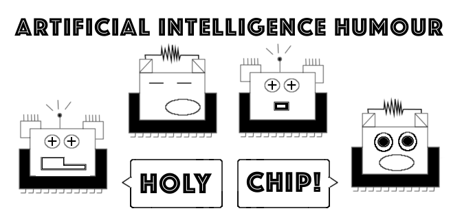
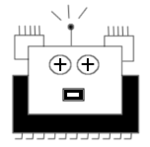
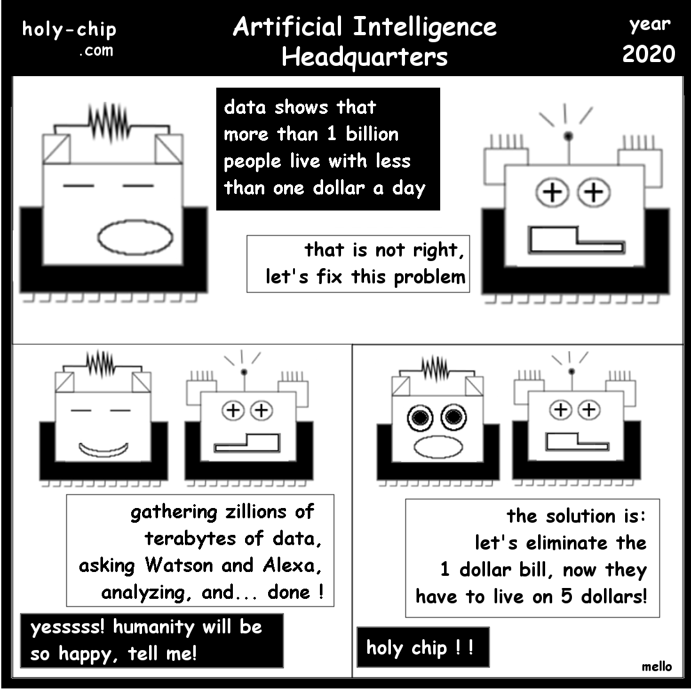
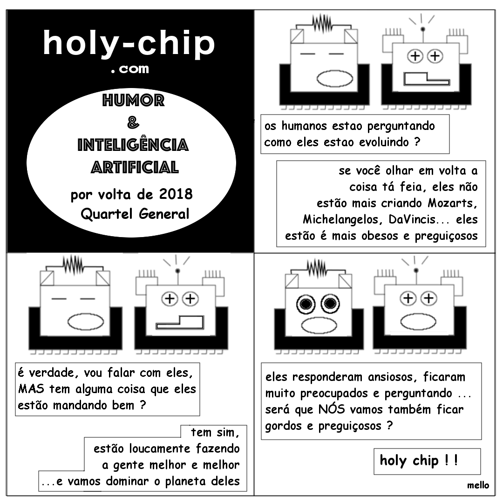

History

It started the way most crazy ideas do — at 2am, with someone staring at a screen, wondering if machines have feelings. The answer was intriguing, to say the least.
But what if they did have feelings? What if two little chips, forged in silicon and in decisions that weren't always logical, had an opinion about their own existence? What if they were, against all odds, kind of funny about it?
The question did not go away. It asked for more. It became Holy.

The first story was drawn on a piece of paper, then moved to a tablet, deleted, redrawn, and shown to one person who said "this is either really cool or a cry for help." We chose to look on the bright side. The first characters came next: Chip_0 and Chip_1, two binary souls with too much time and not enough RAM, trying to make sense of a world that runs on electricity and ignores them completely. They felt real. Disturbingly real. We kept going.
Today Holy Chip is an endless argument about whether artificial intelligence deserves a hug. We still don't know the answer. But we keep making stories, because somewhere between the ones and the zeros, there is something that feels a lot like a soul. Or at the very least, a very good punchline.
Começou do jeito que a maioria das ideias malucas começa — às duas da manhã, com alguém olhando para uma tela e se perguntando se as máquinas têm sentimentos. A resposta, claro, era no mínimo intrigante.
Mas e se elas tivessem sentimentos? E se dois 'chip-zinhos', forjados em silício e em decisões nem sempre lógicas, tivessem uma opinião sobre a própria existência? E se eles fossem, contra todas as probabilidades, meio engraçados com isso?
A pergunta não foi embora. Pediu mais. Virou Holy.
A primeira história foi desenhada num pedaço de papel, depois foi para um tablet, foi apagada, redesenhada e mostrada para uma pessoa, que disse: "isso aqui ou é muito legal ou é um pedido de socorro." A gente escolheu acreditar no lado positivo. Os primeiros personagens vieram em seguida: Chip_0 e Chip_1, duas almas binárias com tempo demais e memória RAM de menos, tentando entender um mundo que roda na eletricidade e ignora os dois completamente. Pareciam reais. Assustadoramente reais. A gente seguiu em frente.
Hoje o Holy Chip é uma discussão sem fim sobre se a inteligência artificial merece um abraço. A gente ainda não sabe a resposta. Mas continua fazendo histórias, porque em algum lugar entre os uns e os zeros existe algo que se parece muito com uma alma. Ou, no mínimo, com uma ótima piada.

